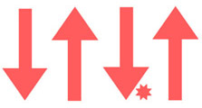
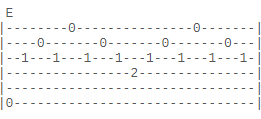
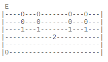

Техники игры
В этой статье вы ознакомитесь со способами звукоизвлечения и приёмами игры на гитаре.
Бой
Это наиболее простой и распространённый способ звукоизвлечения для аккомпанемента пению.
Существуют различные виды боёв:
- четвёрка 
- шестёрка
- восьмёрка
- и другие
Разновидностью боя также является расгеадо. Это приём игры, при котором пальцы "веером" ударяют по струнам.
Перебор
Овладение этим способом игры требует терпения, но он тоже часто используется для аккомпанирования. Обычно большой палец играет бас, указательный, средний и безымянный по первым трём струнам в зависимости от "рисунка".
Варианты перебора:
- шестёрка
- восьмёрка 
- вальсовый 